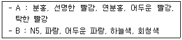
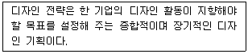
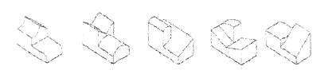

시각디자인산업기사 (2018-03-04 기출문제)
1과목: 색채학
1. 영-헬름홀츠의 삼원색설에 관한 설명으로 옳은 것은?
- 망막에 파장별로 빨강, 초록, 파랑의 색광에 감광하는 수용기가 있다.
- 3색광이 모두가 반응하면 분홍으로 보인다.
- 3색광 중 초록과 청색이 동시에 반응하면 자주색으로 보인다.
- 3색광 중 빨강과 초록이 동시에 반응하면 청록색으로 보인다.
(정답률: 85%)

2. KS A 0011 물체색의 색이름 중 관용색명, 계통색명, 먼셀 표기의 순서가 잘못 연결된 것은?
- 카키색 - 탁한 황갈색 - 2.5Y 5/4
- 빨강 - 사과색 - 7.5R 4/10
- 세룰리안블루 - 파랑 - 7.5B 4/10
- 진달래색 - 밝은 자주 - 7.5RP 5/12
(정답률: 60%)
3. 색의 배색과 그 효과에 대한 설명 중 틀린 것은?
- 보색의 배색은 강한 이미지를 전달한다.
- 붉은색 계열의 배색은 동적이며 따뜻하다.
- 채도가 높은 색과 낮은 색의 배색은 강한 대비감을 준다.
- 높은 명도의 배색은 남성적 이미지를 전달한다.
(정답률: 85%)
4. 다음 중 딱딱하고, 찬 느낌의 색은?
- 중성색 계열의 중명도색
- 난색 계열의 저채도색
- 한색 계열의 저명도색
- 중성색 계열의 고명도색
(정답률: 88%)
5. 색채의 효과에 대한 설명 중 잘못된 것은?
- 난색이 한색보다 진출해 보인다.
- 고채도의 색이 저채도의 색보다 주목성이 높다.
- 한색이 난색보다 팽창되어 보인다.
- 저명도의 색이 고명도의 색보다 후퇴해 보인다.
(정답률: 88%)
6. 다음에 제시된 A, B 두 배색의 공통점은?

- 여러 가지 색상이 배색된 보색 조화이다.
- 동일한 색상에 톤의 변화를 준 톤온톤 배색이다.
- 빨간색의 동일 채도 배색이다.
- 파란색과 무채색을 이용한 강조 배색이다.
(정답률: 87%)
7. 색의 3속성에 대한 설명으로 옳지 않은 것은?
- 색의 3속성에는 색상(hue), 명도(value), 채도(chroma)가 있다.
- 감각으로 구별되는 색의 속성을 색상이라고 한다.
- 색의 밝고 어두움을 척도화한 것을 명도라고 한다.
- 채도가 0일때 가장 순수한 색이 된다.
(정답률: 87%)
8. 색채조화의 원리 중 저드(Judd)가 주장하는 조화론에 속하지 않는 것은?
- 질서의 원리
- 친근성의 원리
- 명료성의 원리
- 토널배색의 원리
(정답률: 87%)
9. 먼셀 색체계에서 색채 기호 표시로 옳은 것은?
- V C/H
- H V/C
- H C/V
- C V/H
(정답률: 86%)
10. 한국산업표준(KS) 색명에 있어 명도와 채도에 관한 수식어가 아닌 것은?
- 밝은
- 탁한
- 진한
- 깨끗한
(정답률: 86%)
11. 색의 혼합에 대한 설명이 잘못된 것은?
- 가산혼합 시 2차색이 1차색보다 명도와 채도가 낮아진다.
- 가산혼합 시 빨강과 파랑의 혼합으로 마젠타이다.
- 색광의 3원색을 각각 혼합한 2차색이 인쇄의 3원색이 된다.
- 원판의 회전혼합이나 병치혼합도 일종의 가산혼합이다.
(정답률: 63%)
12. 푸른 하늘이나 붉은 노을이 보여 지는 현상으로 빛이 미세한 입자에 충돌하여 사방으로 퍼지는 것은?
- 간섭
- 굴절
- 산란
- 흡수
(정답률: 90%)
13. 다음 중 병실의 천장 색으로 가장 적합한 것은?
- 명도 8, 채도 2
- 명도 5, 채도 4
- 명도 4, 채도 3
- 명도 2, 채도 4
(정답률: 68%)
14. 좁은 방을 시각적으로 넓고 시원하게 보이게 하려면 어떤 색이 가장 효과적인가?
- 고명도의 한색계
- 중명도의 한색계
- 고채도의 난색계
- 저명도의 난색계
(정답률: 81%)
15. 다음 중 Magenta의 보색은?
- Yellow
- Green
- Cyan
- Blue
(정답률: 62%)
16. 톤을 이용한배색 중 톤인톤(Tone in Tone)배색에 대한 내용 중 옳은 것은?
- 서로 반대되는 색상 톤의 조합이다.
- 인접하거나 유사색상 내에서 비슷한 톤으로 볼 수 있다.
- 비콜로 배색도 톤인톤 배색과 같은 종류로 볼 수 있다.
- 고채도 영역의 톤에서는 색상의 선택에 따라 보색대비 효과가 있다.
(정답률: 73%)
17. 색입체에서 명도축과 거리가 멀수록 어떤 색이 배치되는가?
- 명도가 높은 색
- 채도가 높은 색
- 명도가 낮은 색
- 채도가 낮은 색
(정답률: 65%)
18. 다음 중 가장 채도가 높은 색은?
- 2.5YR 6/8
- 10R 5/4
- 5R 9/2
- 5Y 8/12
(정답률: 77%)
19. 표면색을 백색광으로 비췄을 때 각 파장별로 빛이 반사 되는 정도를 나타내는 용어는?
- 분광 밀도
- 분광 투과율
- 분광 반사율
- 분광 복사 휘도율
(정답률: 93%)
20. 색채계획에서 배색기법을 나타낸 것으로 틀린 것은?
- 주조색은 색채 계획 시 첫 번째로 표현하고 싶은 이미지의 중심이 되는 색으로 바탕색이나 배경색인 경우가 많고 다양한 목적과 조건을 고려하여 결정하여야 한다.
- 보조색은 한 가지 또는 여러가지 색인 경우도 있으며 주조색과 색상이나 톤 차이를 작게 하여 비슷하게 하면 통일감 있는 조화를 얻을 수 있다.
- 그라데이션에 조화는 모든 단계의 색을 동일하게 처리하는 배색기법을 말한다.
- 강조색은 배색 전체의 악센트(accent) 역할을 하는 색으로서 전체의 기조를 해지지 않는 범위에서 사용하는 것이 효과적이다.
(정답률: 85%)
2과목: 인쇄 및 사진기법
21. 다음 중 흑백사진 콘트라스트 강조용 필터가 아닌 것은?
- Y2 필터
- R2 필터
- O2 필터
- LB 필터
(정답률: 60%)
22. 광물성 안료와 천연 또는 합성 접착제를 혼합하여 건조시킨 다음 슈퍼캘린더기로 광택 처리한 인쇄용지는?
- 머신코트지
- 합성지
- 아트지
- 상질지
(정답률: 66%)
23. 다음 중 감도가 가장 빠른 것은?
- ISO 100
- ISO 50
- ISO 20
- ISO 10
(정답률: 83%)
24. 인화된 사진에서 불필요한 부분을 잘라내는 작업은?
- 콜라주(collage)
- 크로핑(cropping)
- 스포팅(spotting)
- 프레이밍(framing)
(정답률: 83%)
25. 다음 중 문자의 크기가 가장 큰 것은?
- 7포인트
- 10포인트
- 13급
- 8급
(정답률: 73%)
26. 볼록판 인쇄 방식 중 광화학적 제판법에 해당되지 않은 것은?
- 연판
- 선화판
- 원색판
- 망점판
(정답률: 40%)
27. 다음 색온도에 관한 설명 중 틀린 것은?
- 조명광원의 색과 광질을 나타내는 척도이다.
- 푸른 기운의 광원은 붉은 기운의 광원의 색온도보다 낮다.
- 촛불의 색온도보다 스트로보의 색온도가 높다.
- 색온도의 단위는 K이다.
(정답률: 70%)
28. 불포화 지방산이 공기 중의 산소와 결합하여 건조되는 방식은?
- 침투 건조
- 냉각 건조
- 증발 건조
- 산화중합 건조
(정답률: 80%)
29. 인쇄 중 뜯김(picking) 현상의 주된 발생 원인이 아닌 것은?
- 잉크의 점성이 지나치게 높을 때
- 종이의 표면 강도가 낮을 때
- 도피층의 접착력이 부족할 때
- 잉크의 색료가 과량일 때
(정답률: 52%)
30. 그라비어 인쇄의 특징에 해당되지 않는 것은?
- 사진인쇄에 적합하다.
- 제과나 식품의 포장지에 많이 사용된다.
- 특수 인쇄 용지에만 인쇄가 가능하다.
- 제판에 고도의 기술을 요하므로 가격면에서 제판비가 많이 들어 소량의 인쇄물에서는 단가가 높다.
(정답률: 55%)
31. 대형카메라처럼 무브먼트 효과를 가지도록 한 렌즈는?
- 줌렌즈
- 광각렌즈
- 매크로렌즈
- 시프트렌즈
(정답률: 62%)
32. 흑백 필름 현상액인 D-76 분말의 희석 시 물의 온도로 가장 적합한 것은?
- 10도
- 27도
- 52도
- 85도
(정답률: 40%)
33. 컬러필름의 현상 후 나타나는 발색층의 3가지 색상은?
- Cyan, Magenta, Yellow
- Magenta, Green, Black
- Orange, Red, Yellow
- Cyan, Magenta, Blue
(정답률: 92%)
34. 렌즈를 통과한 빛이 필름면에 초점을 맺는 원리는 빛의 어떤 작용과 관계가 있는가?
- 빛의 회절
- 빛의 굴절
- 빛의 반사
- 빛의 확산
(정답률: 66%)
35. 움직이는 물체에 카메라가 따라 가면서 촬영하는 방법은?
- 프레이밍(framing)
- 패닝(panning)
- 포트레이트(portrait)
- 비네트(vignette)
(정답률: 81%)
36. 책표지의 한쪽 부분에 색다른 클로스(cloth)나 가죽을 붙이며, 등가죽과 앞표지의 일부분을 덮는 것은?
- 귀발이(corner)
- 동정(outside)
- 홈(groove)
- 머리띠(head band)
(정답률: 56%)
37. 필름의 특성에 대한 설명으로 옳지 않은 것은?
- 감도가 낮은 필름은 명암차이가 콘트라스트가 강하다.
- 필름의 감도는 ISO에 의하여 표기하며 DIN과 함께 쓰이게 된다.
- 필름의 감색성 중 정색성은 적색 부분의 파장에 반응하며, 녹색과 청색 파장에 대해서는 반응하지 않는다.
- 일반적인 저감도 필름은 할로겐화은 입자가 가늘고 고르게 분포되어 있는 미립자이다.
(정답률: 42%)
38. 활판술의 시조인 구텐베르크가 인쇄에 기계를 처음 사용하면서 적용한 인쇄방식은?
- 평압식
- 원압식
- 공판식
- 윤전식
(정답률: 69%)
39. 렌즈의 종류에서 화각이 180도 이상이 되는 렌즈는?
- 표준렌즈
- 망원렌즈
- 줌(Zoom)렌즈
- 어안렌즈
(정답률: 62%)
40. 사진감광도를 표시하는 방법 중 DIN 방식은 어는 나라의 규격인가?
- 덴마크
- 미국
- 독일
- 영국
(정답률: 69%)
3과목: 시각디자인론
41. 우리나라 디자인 진흥책에 대한 내용으로 틀린 것은?
- 1966년 대한민국 상공미전이 개최되었다.
- 수출 지향적 국가정책에 힘입어 발전하였다.
- 1970년대 시각, 공업 디자인 교육이 분리되기 시작하였다.
- 순수미술의 미를 산업에 그대로 사용하였다.
(정답률: 74%)
42. 피부표면이 어떤 대상에 접촉했을 때 체험되는 감각은?
- 촉각
- 청각
- 미각
- 시각
(정답률: 94%)
43. 고결, 희망, 상승, 긴장의 느낌과 관련된 선의 종류는?
- 직선
- 수직선
- 수평선
- 사선
(정답률: 75%)
44. 디자인 매니지먼트(design management)의 설명으로 틀린 것은?
- 디자인 목적을 능률적으로 달성 지향
- 조직을 형성하고 필요한 인원을 충원
- 신규 자본 확보를 위한 기업 설명
- 디자인 전반에 관련한 계획 수립
(정답률: 70%)
45. 독일공작연맹에 대한 설명으로 거리가 먼 것은?
- 규격화에 의한 상품의 양질화가 목표
- 기계생산의 전면부정과 수공예로의 복귀 주장
- 헤르만무테지우스에 의해 1907년에 결성됨
- DWB를 약칭으로 함
(정답률: 77%)
46. 치수 보조 기호의 설명이 올바른 것은?
- R : 중심선
- Φ : 원의 직경
- T : 모따기
- C : 판의 두께
(정답률: 56%)
47. 아래 내용을 구성하는 3요소가 아닌 것은?

- 디자인 목표(Design Objectives)
- 디자인 범주(Design Scope)
- 디자인 운영정책(Design Operating Policy)
- 디자인 트렌드(Design Trend)
(정답률: 63%)
48. 1960년대 뉴욕을 중심으로 일어나 대중사회의 이미지를 주제로 삼았던 예술사조로 그래픽 디자인 분야에 큰 영향을 미친 것은?
- 옵 아트
- 팝 아트
- 초현실주의
- 구성주의
(정답률: 85%)
49. 그림과 관련한 공통된 디자인 원리는?
- 대비
- 착시
- 리듬
- 대칭
(정답률: 84%)
50. 등각투상도 중에서 평면도(Top View)가 같은 형태로 나타나는 것은 모두 몇 개인가?

- 2개
- 3개
- 4개
- 5개
(정답률: 52%)
51. 디자인 계획에서 디자이너는 차별화를 통한 제품의 질적 발전을 유도한다. 다음 중 차별화와 관련이 없는 것은?
- 시장의 침체요인 파악
- 새로운 기능 방식 개발
- 실용 편의성의 발견
- 제품 생산자의 욕구 추구
(정답률: 76%)
52. CI(Corporate Identity)가 출현한 원인이나 배경과 거리가 먼 것은?
- 자본주의의 발달
- 경제 규모의 확대
- 인공지능의 발달
- 기업 간 경쟁의 심화
(정답률: 84%)
53. 교육체계가 산업과 가장 밀착되었던 바우하우스의 시기는?
- 제1기 Weimar Bauhaus
- 제2기 Dessau Bauhaus
- 제3기 Hannes Meyer 시대 Bauhaus
- 제4기 Mies Van de Rohe시대 Bauhaus
(정답률: 62%)
54. 일반적으로 지도의 산이나 계곡의 표현에 많이 사용되는 투상은?
- 직사투상
- 정투상
- 등각투상
- 표고투상
(정답률: 69%)
55. 다음 중 지각 항상성이 적용되지 않는 것은?
- 크기
- 형태
- 온도
- 색채
(정답률: 78%)
56. 세계적인 디자인 강국이 되기 위해 디자인 분야 국가 산업, 정부 정책 차원의 장기적인 노력으로 적절치 못한 것은?
- 디자인의 문화적 접근
- 디자인의 국제화
- 디자인 정책의 단순화
- 디자인 프로세스의 노하우 축척
(정답률: 87%)
57. 다음 중 CIP(corpotate identity program)와 거리가 먼 것은?
- 스토리보드
- 시그니처 시스템
- 색상과 서체
- 심볼마크
(정답률: 85%)
58. 멤피스(Memphis) 디자인 그룹에 대한 설명 중 틀린 것은?
- 일상제품을 더욱 장식적이며 풍요로운 디자인으로 탐색하였다.
- 장난기 있는 신기한 형태, 무늬, 장식을 사용하였다.
- 1981년 창립된 프랑스의 보수적인 디자인 그룹이다.
- 에토레 소타스(Ettore Sottass)가 중심적인 역할을 하였다.
(정답률: 71%)
59. 기하학의 도형과 같이 직접 지각하여서는 얻을 수 없는 이념적인 형태는?
- 순수형태
- 현실형태
- 인위형태
- 자연형태
(정답률: 52%)
60. 제품 디자인 개발 프로세스를 올바르게 나열한 것은?
- 디자인발의 → 디자인확인 → 디자인연구 → 디자인분석 → 디자인종합 → 디자인평가 → 디자인개발
- 디자인발의 → 디자인연구 → 디자인확인 → 디자인분석 → 디자인종합 → 디자인평가 → 디자인개발
- 디자인발의 → 디자인분석 → 디자인연구 → 디자인확인 → 디자인종합 → 디자인평가 → 디자인개발
- 디자인발의 → 디자인분석 → 디자인연구 → 디자인확인 → 디자인개발 → 디자인평가 → 디자인종합
(정답률: 24%)
4과목: 시각디자인실무 이론
61. 단순한 형태로 시작하여 복잡하고 불규칙적인 자연의 형상을 표현하는 3차원 형상 모델링은?
- 서페이스 모델(Surface Model)
- 솔리드 모델(Solid Model)
- 파라메트릭 모델(Parametric Model)
- 프랙탈 모델(Practal Model)
(정답률: 47%)
62. P.O.P. 디자인의 특징이 아닌 것은?
- 디스플레이, 포장, 점포 내 광고 등을 통해 구매결정에 영향력을 주어야 한다.
- 비고적 광고물 노출시간이 길기 때문에 메시지는 충분히 설명적이어야 한다.
- 소비자들에게 상품을 직접 접하게 함으로써 구매의사 관여도를 높여야 한다.
- 표적시장의 욕구에 맞춰 마케팅을 구사할 수 있는 세일즈 프로모션의 영역이다.
(정답률: 78%)
63. 슈퍼그래픽의 기능으로 거리가 먼 것은?
- 지표물의 기능
- 공간조절의 기능
- 실용적 기능
- 생산적 기능
(정답률: 42%)
64. 시장세분화 방법으로 성별, 연령, 직업 등이 기준이 되는 요인은?
- 인구 통계학적 요인
- 심리학적 요인
- 유통구조적 요인
- 상품구성적 요인
(정답률: 86%)
65. 마케팅 개념을 가장 옳게 설명한 것은?
- 마케팅 개념은 기업이 가장 잘 만족시킬 수 있는 소비자 집단을 규정하고 유도하는 활동을 말한다.
- 마케팅은 소비자의 이익과 관련하여 발생하는 활동을 의미한다.
- 마케팅은 기업 측과 협력하는 소비자 집단을 말한다.
- 시장에서의 교환을 통하여 인간의 필요와 욕구 만족 및 기업의 생존과 성장 목적을 달성하는 것이다.
(정답률: 49%)
66. 컴퓨터 그래픽에서 고가의 폰트 박스 없이 저렴하게 고품질을 사용하고자 애플컴퓨터와 마이크로소프트가 공동으로 개발한 디지털 폰트 포맷은?
- 포스트 스크립트(postscript)
- 트루타입 폰트(true type font)
- CID-Keyed 폰트
- 오픈 타입(open type)
(정답률: 56%)
67. 다음 중 포스트모더니즘을 설명한 것을 옳은 것은?
- 기능보다 인간의 정서적, 유희적 본성을 중요시한 문화 현상을 의미한다.
- 기하학적 추상주의와 같이 비례 관계의 구성을 중시하는 현상이다.
- 기능주의에 입각한 모더니즘의 전통을 중시하는 현상이다.
- 비합리적 인식이나 초의식의 세계를 추구하는 예술표현 사조이다.
(정답률: 40%)
68. CIP(Corporate Identity Program)에 대해 가장 잘 설명한 것은?
- 기업의 효과적인 제품전략 디자인을 말한다.
- 기업의 신, 구 상품 통합 디자인을 말한다.
- 기업 간의 동질화 전략 디자을 말한다.
- 기업 이미지 통합 디자인을 말한다.
(정답률: 85%)
69. TV 광고 중 프로그램과 프로그램사이에 삽입되는 광고는?
- 블록 광고
- 프로그램 광고
- 스파트 광고
- 네트웍 광고
(정답률: 43%)
70. 균형의 가장 일반적인 모습으로 정적인 균형이 잡힌 상태로 질서를 주기 좋고 통일감을 얻기 쉬운 방법은?
- 종속
- 대칭
- 비례
- 주도
(정답률: 68%)
71. 커뮤니케이션의 기본적인 구성요소가 아닌 것은?
- 매체
- 송신자
- 의견수렴자
- 수신자
(정답률: 79%)
72. 단순화된 그림으로 그 의미를 전달하는 것으로서 언어를 대신하여 대상의 특성과 방법을 표현하는 그래픽 심벌은?
- Diagram
- Telegram
- Photogram
- Pictogram
(정답률: 88%)
73. 매슬로우(Maslow)의 인간욕구 단계 중 첫 번째로 요구되는 욕구는?
- 생리적 욕구
- 안전에 대한 욕구
- 사회적 욕구
- 자아실현의 욕구
(정답률: 82%)
74. 다음 중 교통광고의 특징을 가장 잘 나타낸 것은?(오류 신고가 접수된 문제입니다. 반드시 정답과 해설을 확인하시기 바랍니다.)
- 상품특성에 따라 소구대상을 일정한 기준으로 선택할 수 있다.
- 시간적으로 쫓기는 타 광고 매체와는 달리 광고 계획시간이 자유롭고 시장 상황에 따라 적절히 대처할 수 있다.
- 안정된 지역에서 소구대상의 지역 세분화 및 지역 밀착형 캠페인이 가능하다.
- 광고 전략이 노출되지 않아 독립적인 마케팅을 전개할 수 있다.
(정답률: 33%)
75. 다음 중 교통광고의 특징을 가장 잘 나타낸 것은?
- 상품특성에 따라 소구대상을 일정한 기준으로 선택할 수 있다.
- 시간적으로 쫓기는 타 광고 매체와는 달리 광고 계획시간이 자유롭고 시장 상황에 따라 적절히 대처할 수 있다.
- 안정된 지역에서 소구대상의 지역 세분화 및 지역 밀착형 캠페인이 가능하다.
- 광고 전략이 노출되지 않아 독립적인 마케팅을 전개할 수 있다.
(정답률: 69%)
76. 메시지 전달이 아닌, 시각적 자극을 통해 대중 심리와 연결되어 있는 그대로의 반응을 유도하는 것이 목적인 포스터는?
- 문화행사포스터
- 상품광고포스터
- 장식포스터
- 실험포스터
(정답률: 64%)
77. 다음 중 교통광고의 종류로 적합하지 않은 것은?
- 빌보드 광고
- 항공기 광고
- 정거장 광고
- 지하철 광고
(정답률: 78%)
78. 컴퓨터 그래픽에서 색채 표현 및 이미지 표현의 기본 단위는?
- 비트(bit)
- 바이트(byte)
- 디지트(digit)
- 워드(word)
(정답률: 89%)
79. 마케팅에서 있어서 소비자 행동에 영향을 미치는 요인이 아닌 것은?
- 개인적 요인
- 심리적 요인
- 사회적 요인
- 강제적 요인
(정답률: 81%)
80. 신문광고의 내용적 요소가 아닌 것으로 독자의 시선을 지면 안에 묶어주는 역할을 하는 것은?
- 헤드라인
- 보더라인
- 슬로건
- 캡션
(정답률: 45%)